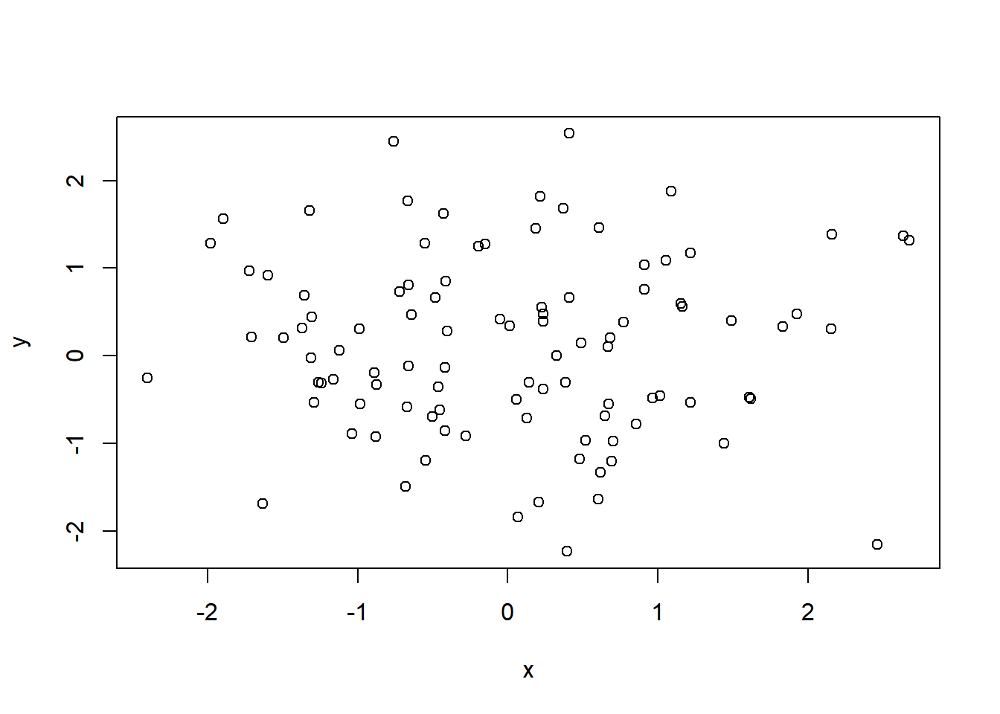
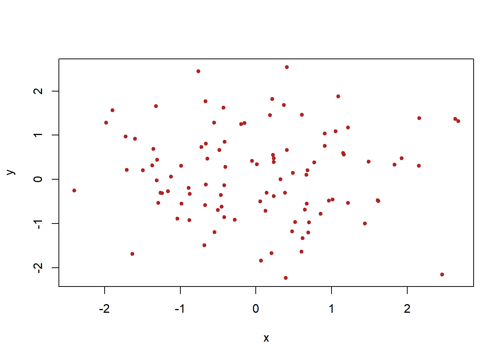
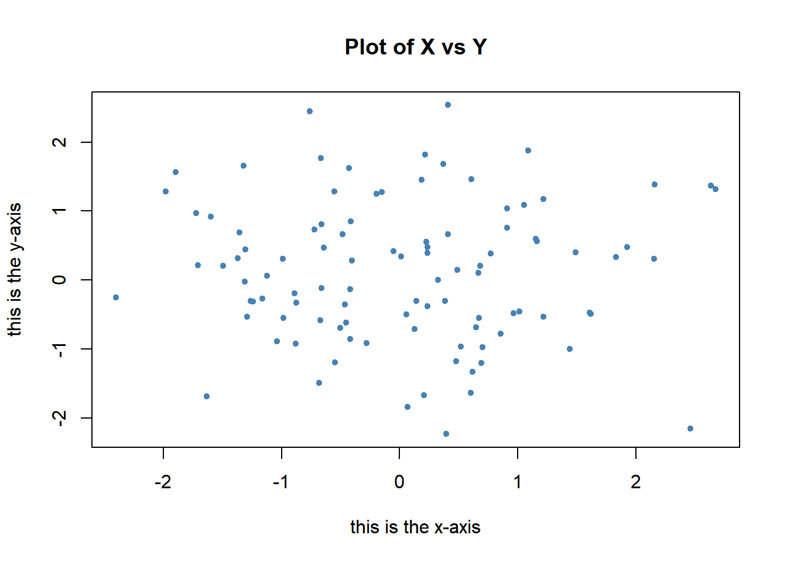

x <- c(1,3,2,5)
x[1] 1 3 2 5x = c(1,6,2)
x[1] 1 6 2y = c(1,4,3)Wang (from Dr. Ho)
starting httpd help server ... done [,1] [,2]
[1,] 1 3
[2,] 2 4 [,1] [,2]
[1,] 1 2
[2,] 3 4 [,1] [,2]
[1,] 1.000000 1.732051
[2,] 1.414214 2.000000 [,1] [,2]
[1,] 1 3
[2,] 2 4 [,1] [,2]
[1,] 1 9
[2,] 4 16x=rnorm(50) # Generate a vector of 50 numbers using the rnorm() function
y=x+rnorm(50,mean=50,sd=.1) # What does rnorm(50,mean=50,sd=.1) generate?
cor(x,y) # Correlation of x and y[1] 0.995136set.seed(1303) # Set the seed for Random Number Generator (RNG) to generate values that are reproducible.
rnorm(50) [1] -1.1439763145 1.3421293656 2.1853904757 0.5363925179 0.0631929665
[6] 0.5022344825 -0.0004167247 0.5658198405 -0.5725226890 -1.1102250073
[11] -0.0486871234 -0.6956562176 0.8289174803 0.2066528551 -0.2356745091
[16] -0.5563104914 -0.3647543571 0.8623550343 -0.6307715354 0.3136021252
[21] -0.9314953177 0.8238676185 0.5233707021 0.7069214120 0.4202043256
[26] -0.2690521547 -1.5103172999 -0.6902124766 -0.1434719524 -1.0135274099
[31] 1.5732737361 0.0127465055 0.8726470499 0.4220661905 -0.0188157917
[36] 2.6157489689 -0.6931401748 -0.2663217810 -0.7206364412 1.3677342065
[41] 0.2640073322 0.6321868074 -1.3306509858 0.0268888182 1.0406363208
[46] 1.3120237985 -0.0300020767 -0.2500257125 0.0234144857 1.6598706557

plot(x,y, pch=20, col = "steelblue",xlab="this is the x-axis",ylab="this is the y-axis",main="Plot of X vs Y") # Add labels
pdf("Figure01.pdf") # Save as pdf, add a path or it will be stored on the project directory
plot(x,y,pch=20, col="forestgreen") # Try different colors?
dev.off() # Close the file using the dev.off functionpng
2 [1] 1 2 3 4 5 6 7 8 9 10 [1] 1 2 3 4 5 6 7 8 9 10